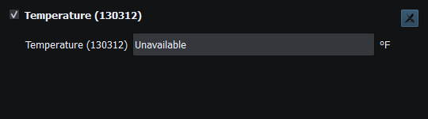

Read the error in the context of the action, active mode and selected transport. A message about a rejected edit, a missing measurement, an unavailable adapter and a failed route request describes different layers.
| Message/state | Meaning and next action |
|---|---|
| Unavailable | Protocol field is not a usable measurement. Keep its canonical unavailable value; do not replace with zero merely to hide it. |
| Invalid/out-of-range edit restored | The committed text failed the field's engineering constraints. Re-enter a valid value in the displayed units. |
| Enable Sending disabled | Check Viewer, active Sending, transport readiness/policy and lifecycle. Do not bypass the guard. |
| Manual movement active | Disable Manual movement before Autopilot Enable; selecting a file alone is not activation. |
| Route incomplete / import invalid | Inspect one ordered route, valid coordinates and bounds. Previous valid selection is preserved. |
| Permission denied / port busy | Check OS access and competing applications; changing CAN bitrate does not fix file permissions. |
| Request timed out / acknowledgment error | Check target identity, supported service and connection. No unbounded retry or invented selectors. |
| Logging unhealthy / recording stopped | Check writable storage, limits and disk health; a paused viewer is a separate state. |
For UTC date/time fields, all-ones wire dates and unavailable time sentinels must display unavailable rather than a far-future date. Valid zero remains midnight/epoch where defined. A second widget may represent a different legitimate source; inspect source identity before assuming duplication.

Figure 92. Unavailable is a protocol validity state, not a huge negative temperature. Click to enlarge.
Application Log · NMEA Traffic Recording · Troubleshooting · Known Limitations · Connection Troubleshooting · Enable, Dispatch and Sending · Route Overview · Engineering Units